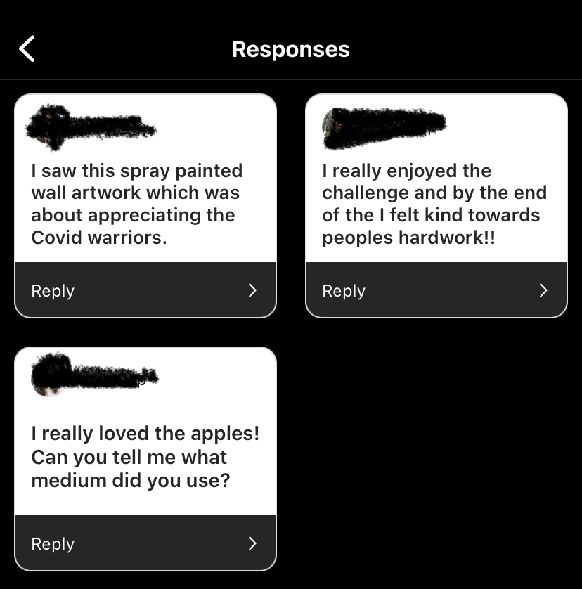
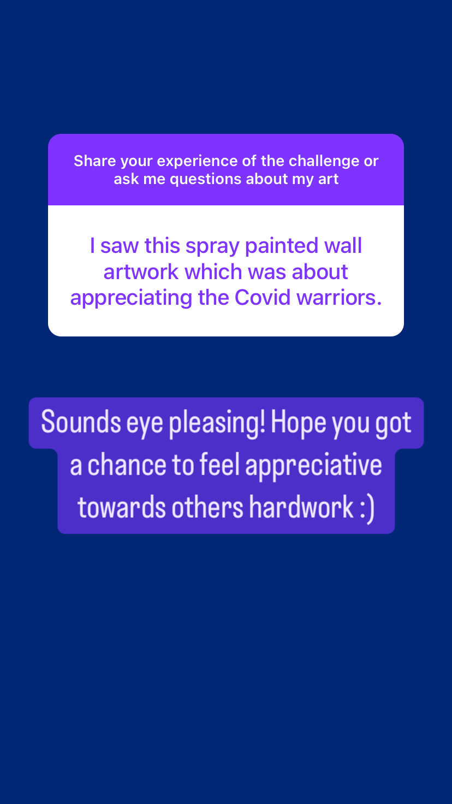
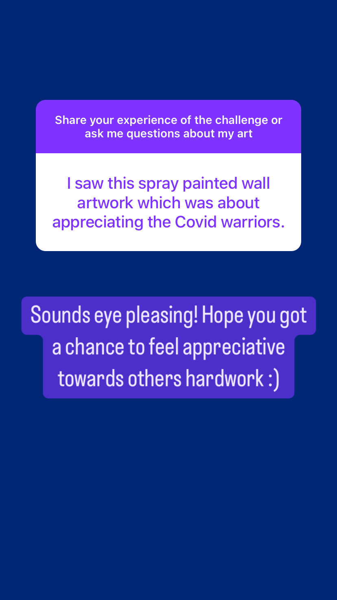
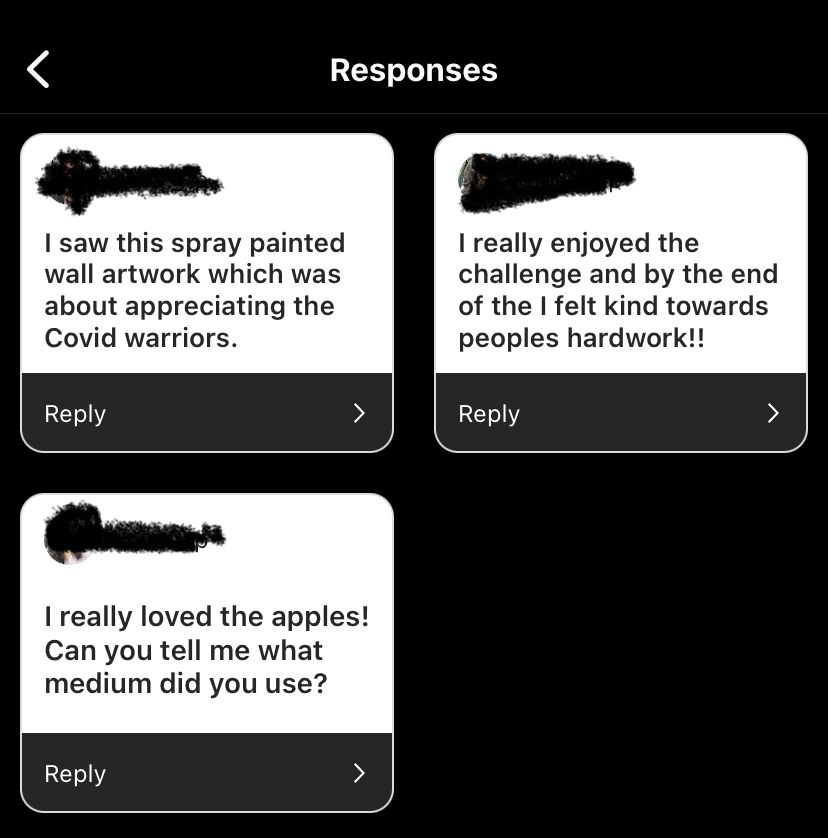
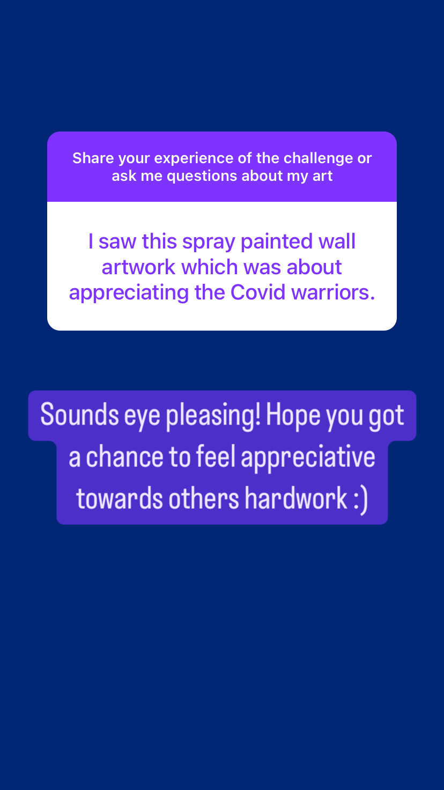

Q&A Session Responses: 

 

The Artistic Pause Challenge is an intervention designed for Instagram, a popular social media platform known for its fast-paced scrolling behavior. The aim of this challenge is to disrupt the typical scroll-and-like behavior by encouraging users to slow down and appreciate the artistic content and the hardwork behind it that they encounter on the platform.
I chose Instagram as the site for my intervention because of its widespread popularity and the abundance of artistic content shared by users. What interests me about Instagram is its potential to connect people through visual storytelling and creative expression.
The Artistic Pause Challenge took place over the course of one week, during which participants were encouraged to pause for at least 30 seconds on each post they encountered and reflect on the artistic content. The challenge was announced through a visually appealing post and supported by regular reminders and encouragement.
The effects of the intervention were largely positive, as it succeeded in prompting users to engage more deeply with the artistic content on Instagram. Participants reported feeling more mindful and intentional in their social media usage, and there was an increase in meaningful interactions and dialogue among participants.
If I had more time to expand on the intervention, I might incorporate more interactive elements such as live sessions or creative prompts to further stimulate engagement and foster a sense of community among participants. Additionally, I would explore ways to sustain the momentum and impact of the intervention over a longer period of time.
Announcements:
Q&A Session Responses:  